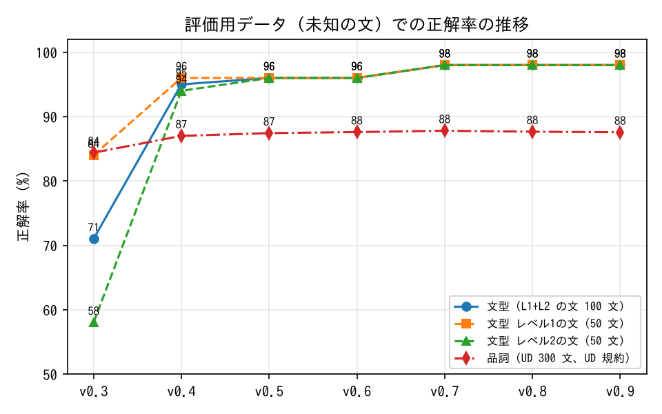

1. 背景と目的
英文読解では「主語・動詞・目的語がどれか」という文構造の把握がつまずきの原因になりやすい。既存の構文解析ツールはサーバや大きな AI モデルを必要とし、授業・自習で使うスマホや GIGA 端末では動かしにくい。
目的：サーバも AI モデルも使わず、ブラウザ内のルールベース処理だけで文型・品詞・訳語・構造訳を可視化するシステムを開発し、その精度を公開データと自作テストセットで定量評価する。
- RQ1 ルールベースだけでどの程度の精度か
- RQ2 規則の規模（レベル 1→3）と精度の関係、規則の干渉
- RQ3 誤りはどの文法現象に集中するか
- RQ4 入試長文でも短文と同程度に動くか
- RQ5 ルールベース訳と小型 AI 翻訳の違い
2. システムの構成
文分割
略語・引用符・段落→ 品詞タグ付け
辞書＋規則（compromise.js）→ チャンク化
名詞句・動詞句・前置詞句→ 変形・畳み込み
疑問文・関係詞節・分詞構文…→ 文型判定
JSON 規則 25 個（level 付き）
略語・引用符・段落→ 品詞タグ付け
辞書＋規則（compromise.js）→ チャンク化
名詞句・動詞句・前置詞句→ 変形・畳み込み
疑問文・関係詞節・分詞構文…→ 文型判定
JSON 規則 25 個（level 付き）
規則ごとに level（1 中学／2 高校／3 入試）を持たせ、「level ≤ N だけ有効」にして実験の軸にした。訳語は EJDict-hand（パブリックドメイン）。Service Worker により一度開けばオフラインで動作。
色＋記号＋ラベル（色覚配慮）ホバーで品詞・原形・訳語構造図（SVG）構造訳（日本語）AI 翻訳（任意・ブラウザ内 FuguMT 145MB）長文：文番号・文型別絞り込み結果を CSV/JSON 保存
3. 画面例（解析結果）
In 1998,Ma small groupSof researchersMbeganVa projectOthat, at first, attracted little attention.M・関係詞節
SheSmadeVhimOhappy.C
構造訳：1998年に 小さな集団は 研究者の （最初は、ほとんど注意を引かなかったという） 計画を 始める〔過去〕
役割（S/V/O/C/M）と辞書の訳語から機械的に組み立てた直訳。「構造どおりに読むとこうなる」を示す学習用のもので、多義語の選択誤り（bark→「皮をはぐ」）は限界として残る。
役割（S/V/O/C/M）と辞書の訳語から機械的に組み立てた直訳。「構造どおりに読むとこうなる」を示す学習用のもので、多義語の選択誤り（bark→「皮をはぐ」）は限界として残る。
適用した処理をチップで表示：文頭の副詞句関係詞節引用伝達の倒置重文分詞構文that 省略 …
判定不能の文には「対象レベルを 3 にすると SVO と判定されます」と案内し、規則レベルの効果を学習者にも見せる。
判定不能の文には「対象レベルを 3 にすると SVO と判定されます」と案内し、規則レベルの効果を学習者にも見せる。
4. 評価方法
| 対象 | データ | 規模 |
|---|---|---|
| 品詞・原形 | Universal Dependencies English-EWT（CC BY-SA） | 300 文・3,247 語 |
| 文型（短文） | 自作：開発用／評価用（未知・改良に使わない） | 197 文／130 文 |
| 文型（長文） | 自作：入試長文 開発用 3 編／評価用 2 編 | 43 文／33 文 |
評価プロトコル：評価用の文は見ずに、誤りの「文法項目名」だけから開発用に文を追加して改良し、版ごとに 1 回だけ評価用を実行して記録する（機械学習の train/test 分割に相当）。すべて Node スクリプトで再現可能。
5. 結果（評価用＝未知のデータ）
93.8%文型 正解率
短文 130 文（規則 ≤3）
短文 130 文（規則 ≤3）
70%文型 正解率
入試長文 33 文
入試長文 33 文
87.7%品詞 正解率
UD 300 文
UD 300 文
0.5 秒処理時間
2,000 語・120 文（PC）
2,000 語・120 文（PC）
| 文のレベル＼有効規則 | ≤1 | ≤2 | ≤3 |
|---|---|---|---|
| レベル1（中学）50 文 | 98% | 98% | 98% |
| レベル2（高校）50 文 | 36% | 98% | 98% |
| レベル3（入試）30 文 | 7% | 27% | 80% |
クロス表（RQ2）：規則を足すほど難しい文が解けるようになり、やさしい文の精度は下がらなかった（干渉なし）。一方 v0.5 開発中には when 節の規則追加で L2 文が 94%→92% に下がる干渉が起き、品詞の曖昧性解消で回復した。
6. 学習曲線（版ごとの改良）

v0.3 → v0.9 で短文 71% → 93.8%。各版で評価用は 1 回だけ測定。開発用（99%）との差が、ルールベースの汎化の限界を示す。
7. 考察と今後
- RQ1：短文では 9 割超、品詞は約 88%。残る誤りの主因はライブラリの品詞誤り（名詞／動詞、固有名詞）と節の終端判定。
- RQ3：評価用で残る誤りは、複合名詞の主語、so…that、強調構文、分詞構文（文末）、接触節など入試レベルの構文に集中。
- RQ4：長文で 70%。文の長さそのものより記号処理（引用・括弧・コンマ）と入試構文が要因。記号処理の導入で開発用長文は 30%→100%。
- 教育利用：無料・オフライン・説明可能（適用規則を表示）。色覚多様性に配慮した表示。構造訳は「訳を見る」より「構造から読む」練習を促す設計。
- RQ5 翻訳方式の比較：構造訳（3 MB・0.75 ms/文）は構造を見せるが日本語は不自然、FuguMT（145 MB・250 ms/文）は自然だが構造は見えない → 役割を分けて併用。
- 今後：学習者実験（可視化あり／なし）、規則の自動獲得、品詞タガーの置き換え。